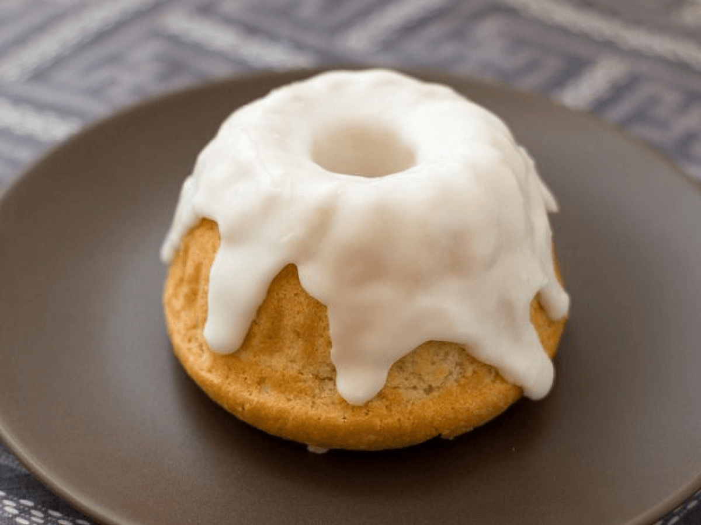

Sweet Roll

After much experimentation, here is the sweetest sweetroll recipe you’ll ever need! Crisp and crunchy on the outside, moist and soft on the inside, this is a truly legendary treat!
ingredients:
- 1 large bundt tin (or 2 smaller ones)
- 2 cups plain flour
- 1 tsp baking powder
- ¾ cup milk
- ½ cup caster sugar
- 1 cup maple syrup or honey
- 3 eggs, beaten
- 60g butter, melted
- 1 vanilla pod, scraped
- 3 tsp cinnamon powder
- 1 cup melted butter
- 1 cup icing sugar
- 1 vanilla pod, scraped
Steps:
- Preheat oven to 200C/392F and grease your bundt tin well with butter.
- In a large mixing bowl, combine all the baking ingredients and mix well. Pour into the bundt tin/s and bake for 45 minutes, or until brown and risen. (It should be firm and crusty on the outside)
- Flip onto a wire rack to cool before transferring to a plate.
- For the glaze, combine the melted butter, sugar, and vanilla in a small bowl and whip until well blended.
- Drizzle over the top of your sweetroll and wait til icing has hardened before eating.
Go back